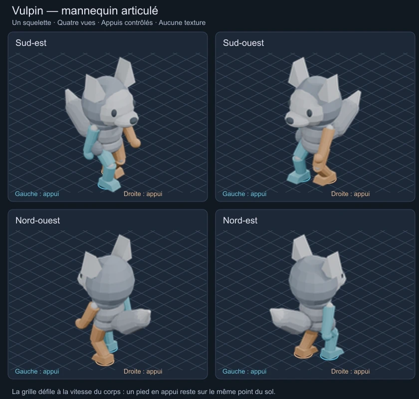
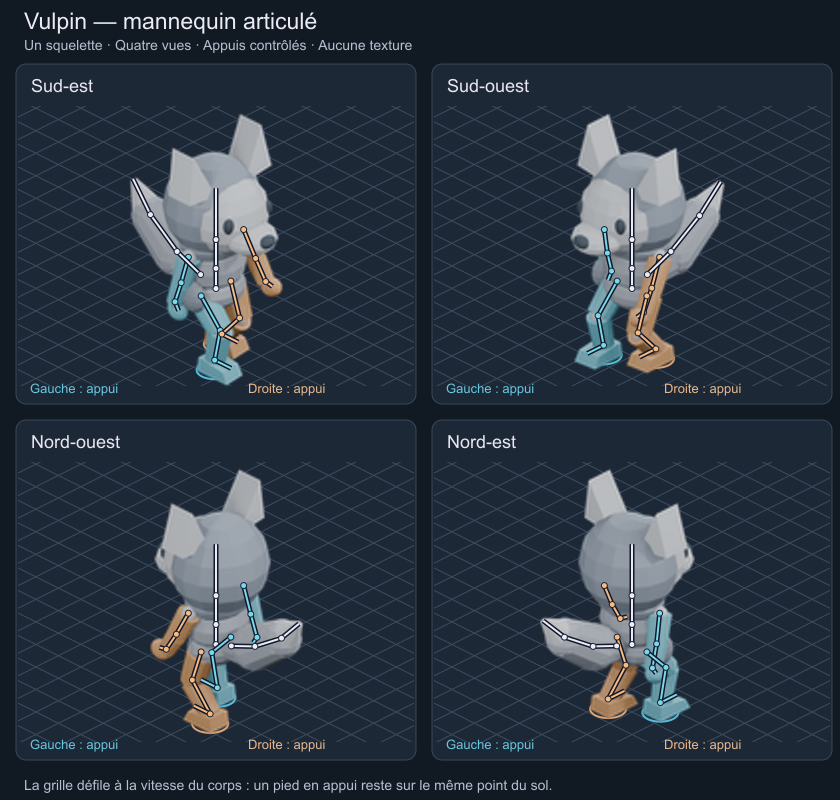
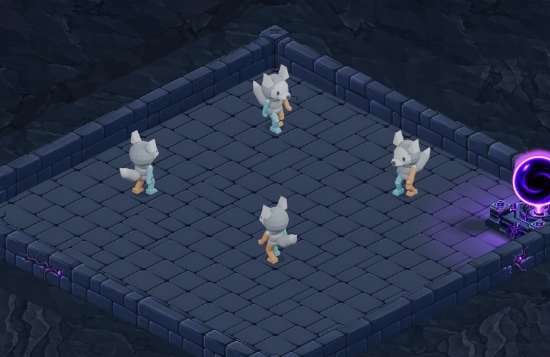

Vulpin — une base articulée pour l’animation
Un seul mannequin et un seul squelette produisent les quatre vues. Les jambes ont une longueur fixe ; des cibles au sol contrôlent les pieds pendant chaque appui. Le côté gauche est cyan, le côté droit cuivre. Le jeu reçoit toujours des sprites 2D.
Maquette de mouvement sans textures. La tête, les oreilles, le museau, la capuche, les mains et la queue sont des volumes de travail : ce n’est pas le modèle peint final du Vulpin. Aucun changement de héros ou de vitesse dans la partie jouable.

Regarder au ralenti
Voir les os et les articulations

Dans le donjon
Capture du moteur Godot, à l’échelle de travail du personnage. Les mannequins avancent de la distance correspondant à leurs foulées. Le clip joue deux cycles puis s’arrête pour éviter un retour instantané au départ ; recharger la page permet de le rejouer.

Ce qui a été contrôlé
241 échantillons du rig, incluant les transitions entre appui et levée : longueur des os constante, pieds au sol pendant l’appui, cibles atteintes et boucle fermée. L’écart de projection avec la caméra du jeu est inférieur à 0,001 pixel. Les 96 sprites préparés sont contenus dans leur cadre commun.
Dans Godot, 49 captures couvrent deux cycles dans les quatre directions. Le déplacement des repères de semelle pendant l’appui reste inférieur à 0,001 pixel. Ce contrôle porte sur la géométrie projetée ; il ne remplace pas l’examen visuel du mouvement.
Limites de cette étape
La démarche utilise encore des semelles plates, sans déroulé talon-pointe. Les vêtements et le visage ne sont pas animés. Les bras sont pilotés par rotations ; les cibles de mains pour le crochetage seront à ajouter. Course, dégâts, crochetage et chute restent à produire sur cette base après validation du mannequin. La vitesse de la démonstration est propre au test et ne modifie pas celle des héros actuels.
Le fichier Blender contient les os, les cibles de pieds, les repères de genoux et les clés d’animation éditables. Aucun appel ImageGen ni modification des peintures validées pour cette étape.
Production, sauvegardes et APK inchangés. Les atlas présents ici servent à la revue et ne sont pas encore optimisés pour la distribution mobile.